Progress Report
Ying Jin
2023-09-15
1 NHANES data
1.1 Data overview
- 8763 subjects, 1440 measures each
- no missingness
N <- length(unique(df$SEQN)) # sample size 8763
J <- max(df$sind) # 1440 measures per subjectrand_id <- sample(unique(df$SEQN), size = 4) # "toy" sample
df %>%
filter(SEQN %in% rand_id) %>%
ggplot()+
geom_point(aes(x=sind, y=Z), size = 0.5)+
facet_wrap(~SEQN)+
labs(x="Time", y = "Activity", title = "A brief overview of the outcome")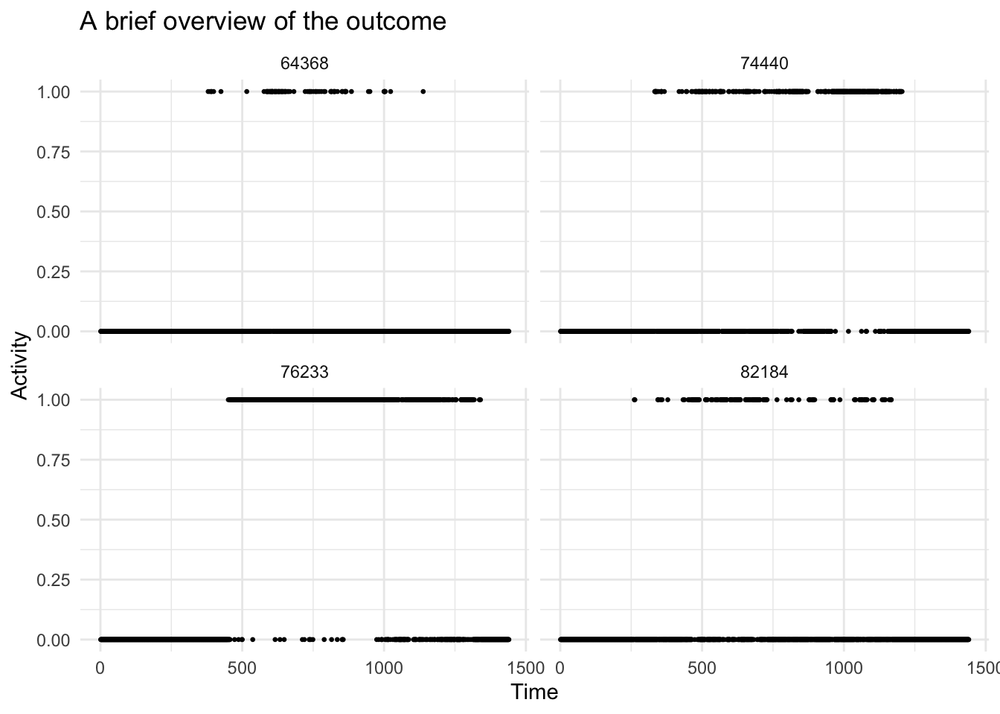
1.2 fGFPCA Estimation
# code
source(here("Code/GLMM-FPCA.R"))
# use pred_latent function to estimate latent function
source(here("Code/OutSampMLE.R"))
# source(here("Code/OutsampBayes.R"))1.2.1 Binning
- Bin every 10 measures
# bin data
bin_w <- 10 # bin width
n_bin <- J/bin_w # number of bins
brks <- seq(0, J, by = bin_w) # cutoff points
mid <- (brks+bin_w/2)[1:n_bin] # mid points
df$bin <- cut(df$sind, breaks = brks, include.lowest = T, labels = mid)
df$bin <- as.numeric(as.character(df$bin))
# head(df)
df %>%
filter(SEQN %in% rand_id) %>%
group_by(SEQN, bin) %>%
summarise(num = sum(Z)) %>%
ggplot()+
geom_point(aes(x=bin, y=num), size = 0.5)+
facet_wrap(~SEQN)+
labs(x="Time", y = "Activity", title = "Number of active nimutes within each bin")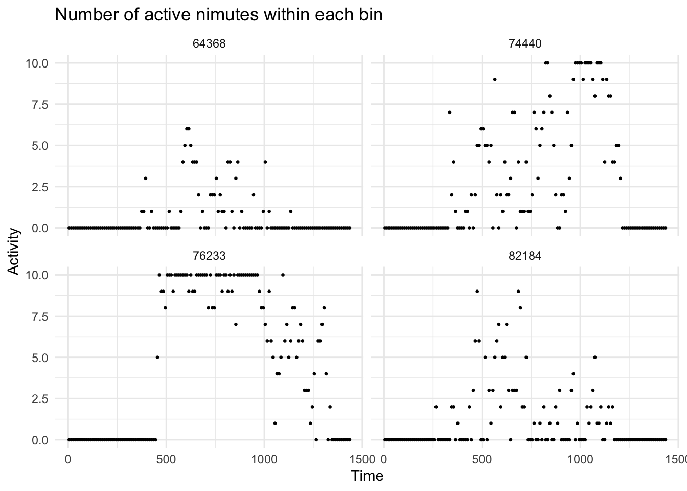
1.2.2 Local GLMMs
Following up on last report, when using glmer, the results from PRILS (nAGQ=0) seems more in line with experiences. As validation, let’s fit the marginal model and look at the estimated population-average latent function, and compare it with the FPCA mean function. Specifically, at bin s the model would be \(g(E(Y_i(s)))=f_0(s)\), with no subject-specific random effect.
Another validation I came up with is to look at the local intercepts. That is the \(\beta_0(s)\) in local mixed models \(g(E(Y_i(s)))=\beta_0(s)+b_i(x)\). This should correspond to the FPCA mean functions, as the population average level.
Since the individual random effects are centered around zero, I believe the marginal \(f_0(s)\) should look very much like the conditional \(\beta_0(x)\) if the model local fit well. The result obviously is in favor of PRILS.n But what is the reason for AGQ to overshoot downward?
# split by each bin
df <- df %>% rename(id = SEQN, Y=Z)
df_bin_lst <- split(df, f = df$bin)# local marginal GLM
local_marg <- function(df){
this_glm <- glm(Y ~ 1, data = df, family = binomial)
eta_hat <- predict(this_glm, type = "link")
df$eta_hat <- eta_hat
return(df)
}
df_est_local_marg <- lapply(df_bin_lst, function(x){local_marg(x)})
# local conditional GLMM
## PIRLS vs AGQ
df_est_cond_mean_pirls <- lapply(df_bin_lst, function(x){mean_latent(x, n_node = 0)})
df_est_cond_mean_agq <- lapply(df_bin_lst, function(x){mean_latent(x, n_node = 5)}) ggarrange(
df_est_local_marg %>% bind_rows() %>%
select(bin, eta_hat) %>% distinct(.) %>%
ggplot(aes(x=bin, y=eta_hat))+
geom_line()+
labs(x="local GLM (marginal)", y = "latent mean")+
ylim(-25, 1),
data.frame(bin=mid, eta_hat = unlist(df_est_cond_mean_pirls)) %>%
ggplot(aes(x=bin, y=eta_hat))+
geom_line()+
labs(x="local GLMM (conditional) using PRILS", y = "latent mean")+
ylim(-25, 1),
data.frame(bin=mid, eta_hat = unlist(df_est_cond_mean_agq)) %>%
ggplot(aes(x=bin, y=eta_hat))+
geom_line()+
labs(x="local GLMM (conditional) using AGQ", y = "latent mean")+
ylim(-25, 1),
nrow = 1, align = "h"
)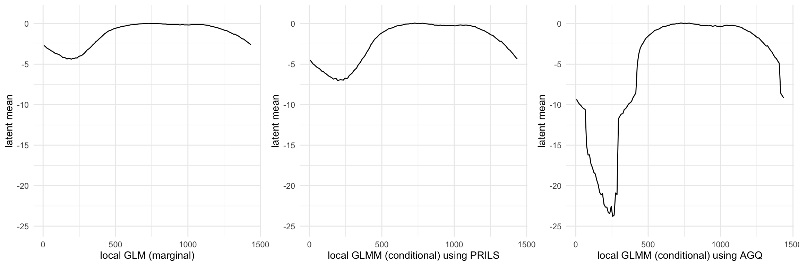
Let’s for now trust the results from PIRLS more than AGQ, if we are using glmer.
# fit local GLMM and estimate latent function
# to avoid near-unidentifiability issues, using PIRLS maximization with nAGQ = 0
# fit local models
df_est_latent <- lapply(df_bin_lst, function(x){pred_latent(x, n_node = 0)})
df_est_latent <- bind_rows(df_est_latent)
# keep midpoint values
df_est_latent <- df_est_latent %>%
select(-sind, -Y) %>% distinct(.)df %>%
filter(id %in% rand_id) %>%
left_join(df_est_latent, by = c("id", "bin")) %>%
mutate(eta_hat = exp(eta_hat)/(1+exp(eta_hat))) %>%
ggplot()+
geom_line(aes(x=sind, y=eta_hat, group = id))+
geom_point(aes(x=sind, y = Y, group = id), size = 0.5)+
facet_wrap(~id, scales = "free")+
labs(x = "Time", y = "Estimated latent function (probablity scale)")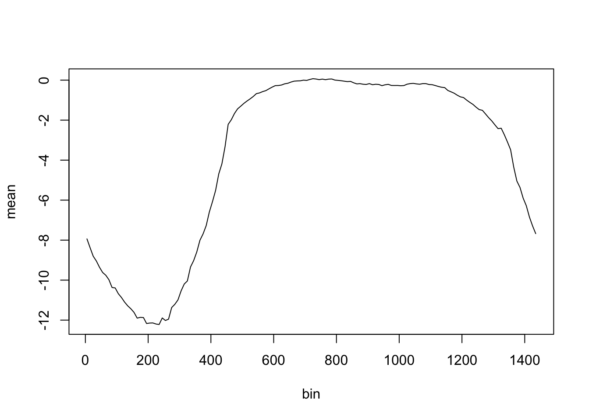
# overview at estimated latent function
df %>%
filter(id %in% rand_id) %>%
group_by(id, bin) %>%
summarise(num = sum(Y)) %>%
left_join(df_est_latent, by = c("id", "bin")) %>%
# mutate(eta_hat = exp(eta_hat)/(1+exp(eta_hat))) %>%
ggplot()+
geom_line(aes(x=bin, y=eta_hat, group = id))+
geom_point(aes(x=bin, y = num, group = id), size = 0.5)+
facet_wrap(~id, scales = "free")+
labs(x = "Bin", y = "Estimated latent function/number of active minutes")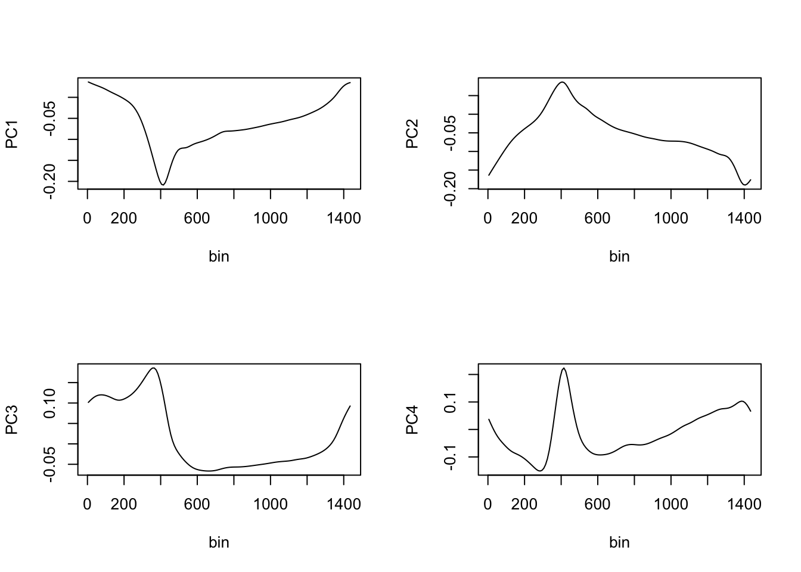
1.2.2.1 An alternative: glmmTMB
The default optimizer of glmmTMB is nlminb (quasi-Newton BFGS), whereas glmer uses bobyaqa (nAGQ=0) or Nelder_Mead (nAGQ>0)?
Let’s first try to re-do the who local GLMM step using glmmTMB. Looks like no numeric issue occurred. It takes slightly longer time than PIRLS in glmer
library(glmmTMB)
# re-fit local GLMM and check numeric issues
try_fit_lst<-list()
t1=Sys.time()
for(i in seq_along(df_bin_lst)){
# this_glm <- tryCatch({glmer(Y ~ 1 + (1|id), data = df_bin_lst[[i]], family = binomial, nAGQ=5)},
# warning=function(w){NA})
this_glm <- glmmTMB(Y ~ 1 + (1|id), data = df_bin_lst[[i]], family = binomial)
try_fit_lst[[i]] <- this_glm
}
df_est_latent_tmb <- lapply(try_fit_lst, function(x){predict(x, type = "link")})
t2=Sys.time()
t_tmb <- t2-t1
# population mean
mean_tmb <- sapply(try_fit_lst, function(x){coef(summary((x)))$cond[1]})- Time: 3.21070526838303 minutes
- Mean/Intercept function: It looks like glmmTMB estimates lie right between PIRLS and AGQ! It takes slightly shorter time than PIRLS and mean function shoots more downward, not as bad as AGQ though.
ggarrange(
df_est_local_marg %>% bind_rows() %>%
select(bin, eta_hat) %>% distinct(.) %>%
ggplot(aes(x=bin, y=eta_hat))+
geom_line()+
labs(x="local GLM (marginal)", y = "latent mean")+
ylim(-15, 1),
data.frame(bin=mid, eta_hat = unlist(df_est_cond_mean_pirls)) %>%
ggplot(aes(x=bin, y=eta_hat))+
geom_line()+
labs(x="local GLMM (conditional) using PRILS (glmer)", y = "latent mean")+
ylim(-15, 1),
data.frame(bin=mid, eta_hat = mean_tmb) %>%
ggplot(aes(x=bin, y=eta_hat))+
geom_line()+
labs(x="local GLMM (conditional) using glmmTMB", y = "latent mean")+
ylim(-15, 1),
nrow = 1
)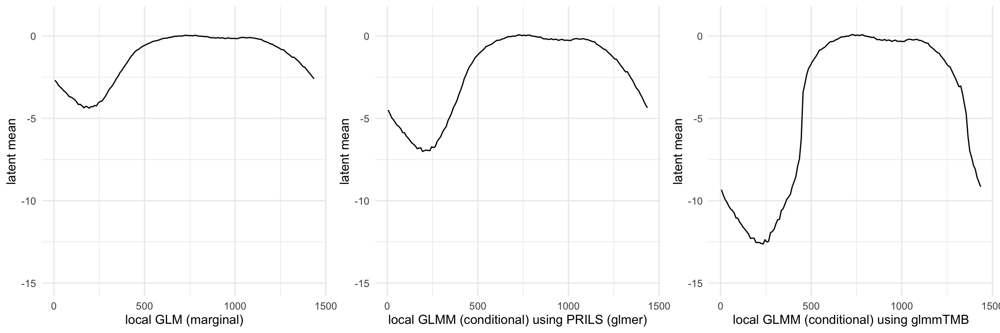
- Individual latent functions
for(i in seq_along(df_est_latent_tmb)){
df_est_latent_tmb[[i]] <- data.frame(df_bin_lst[[i]], eta_hat = df_est_latent_tmb[[i]])
}
df_est_latent_tmb <- bind_rows(df_est_latent_tmb)
# keep midpoint values
df_est_latent_tmb <- df_est_latent_tmb %>%
select(-sind, -Y) %>% distinct(.)df %>%
filter(id %in% rand_id) %>%
left_join(df_est_latent %>% select(id, bin, eta_hat), by = c("id", "bin")) %>%
left_join(df_est_latent_tmb %>% select(id, bin, eta_hat) %>% rename(eta_hat_tmb=eta_hat),
by = c("id", "bin")) %>%
mutate_at(vars(eta_hat, eta_hat_tmb), function(x){exp(x)/(1+exp(x))}) %>%
ggplot()+
geom_line(aes(x=sind, y=eta_hat, col = "glmer", alpha = 0.5))+
geom_line(aes(x=sind, y=eta_hat_tmb, col = "glmmTMB", alpha = 0.5))+
geom_point(aes(x=sind, y = Y), size = 0.5)+
facet_wrap(~id, scales = "free")+
labs(x = "Time", y = "Estimated latent function (probablity scale)")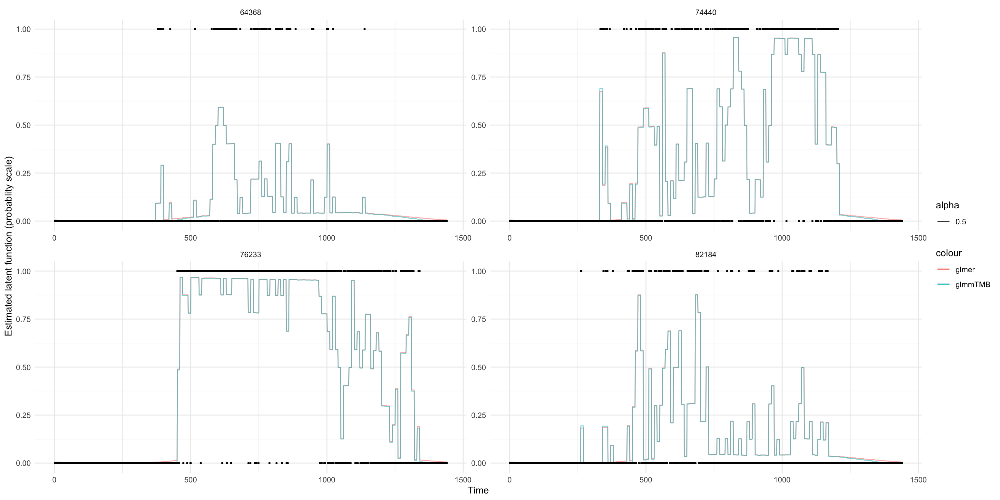
# overview at estimated latent function
df %>%
filter(id %in% rand_id) %>%
group_by(id, bin) %>%
summarise(num = sum(Y)) %>%
left_join(df_est_latent %>% select(id, bin, eta_hat), by = c("id", "bin")) %>%
left_join(df_est_latent_tmb %>% select(id, bin, eta_hat) %>% rename(eta_hat_tmb=eta_hat),
by = c("id", "bin")) %>%
ggplot()+
geom_line(aes(x=bin, y=eta_hat, col = "glmer", alpha = 0.5))+
geom_line(aes(x=bin, y=eta_hat_tmb, col = "glmmTMB", alpha = 0.5))+
geom_point(aes(x=bin, y = num), size = 0.5)+
facet_wrap(~id, scales = "free")+
labs(x = "Time", y = "Estimated latent function")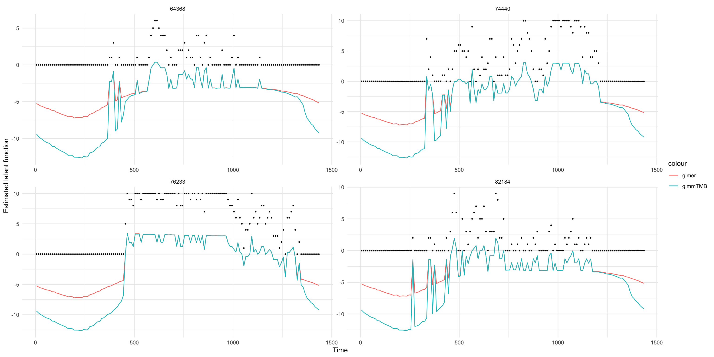
So it looks like glmmTMB still overshoot downwards. Between the two methods, the mid-day part (active part for most people) seems to be very similar. Difference lies mostly at both ends, with consecutive inactive minutes.
# numeric values of individual latent function
df %>%
filter(id %in% rand_id) %>%
group_by(id, bin) %>%
summarise(num = sum(Y)) %>%
left_join(df_est_latent %>% select(id, bin, eta_hat), by = c("id", "bin")) %>%
left_join(df_est_latent_tmb %>% select(id, bin, eta_hat) %>% rename(eta_hat_tmb=eta_hat),
by = c("id", "bin")) %>%
head(20)1.2.3 FPCA
Follow up from late time, let’s use PIRLS estimator and fix the number of PC functions instead of using all of them. We start with four PC functions.
I will use estimated latent functions from both glmer (nAGQ=0) and glmmTMB, and compare their results.
# glmer nAGQ=0
mat_est_unique <- matrix(df_est_latent$eta_hat, nrow=N, ncol=n_bin, byrow = F)
fpca_mod <- fpca.face(mat_est_unique, argvals = mid, var=T)
# lmmTMB
mat_est_unique2 <- matrix(df_est_latent_tmb$eta_hat,
nrow=N, ncol=n_bin, byrow = F)
fpca_mod2 <- fpca.face(mat_est_unique2, argvals = mid, var=T)
# ncol(fpca_mod$efunctions) # 27 eigenfunctions
K <- 4- Population mean function
Hmm…FPCA seems to shoot the population mean downward in both methods, more so for glmmTMB. It looks like more rounds of model would make the population mean function more variable. Does that make sense?
# population mean
par(mfrow=c(1, 2))
plot(mid, fpca_mod$mu, type = "l", xlab = "bin", ylab = "mean", main = "glmer",
ylim = c(-12, 1))
plot(mid, fpca_mod2$mu, type = "l", xlab = "bin", ylab = "mean", main = "glmmTMB", ylim = c(-12, 1))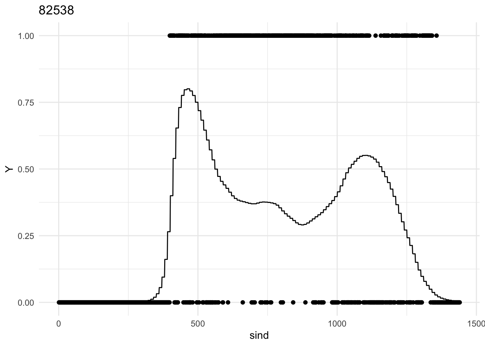 - PC functions
# eigenfunctions
par(mfrow=c(4,2))
plot(mid, fpca_mod$efunctions[, 1], type="l", xlab="bin", ylab="PC1", main = "glmer", ylim = c(-0.21, 0.13))
plot(mid, fpca_mod2$efunctions[, 1], type="l", xlab="bin", ylab="PC1", main = "glmmTMB", ylim = c(-0.21, 0.13))
plot(mid, fpca_mod$efunctions[, 2], type="l", xlab="bin", ylab="PC2", ylim = c(-0.2, 0.14))
plot(mid, fpca_mod2$efunctions[, 2], type="l", xlab="bin", ylab="PC2",ylim = c(-0.2, 0.14))
plot(mid, fpca_mod$efunctions[, 3], type="l", xlab="bin", ylab="PC3", ylim = c(-0.2, 0.2))
plot(mid, fpca_mod2$efunctions[, 3], type="l", xlab="bin", ylab="PC3",ylim = c(-0.2, 0.2))
plot(mid, fpca_mod$efunctions[, 4], type="l", xlab="bin", ylab="PC4", ylim = c(-0.14, 0.23))
plot(mid, fpca_mod2$efunctions[, 4], type="l", xlab="bin", ylab="PC4",
ylim = c(-0.14, 0.23))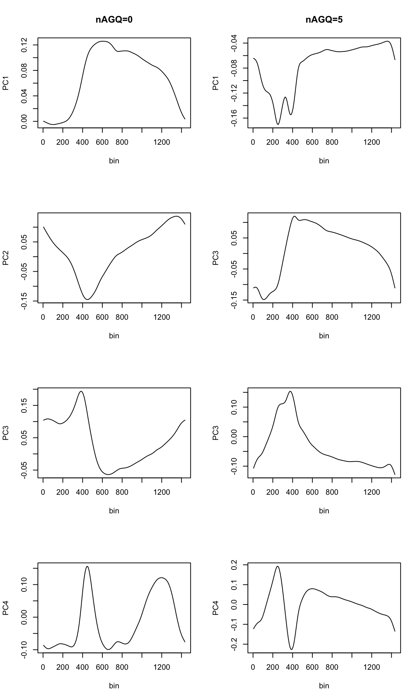
- Individual covariance matrix
Wow! This covariacne matrix changed a lot from when using all of the PCs! It still looks cyclic, but now off-diagnoal region seems much more stable. Fluctuations mostly centered around diagnoal line.
# covariance
heatmap(fpca_mod$VarMats[[which(unique(df_est_latent$id)==rand_id[1])]],
Rowv = NA, Colv = NA, main = "glmer")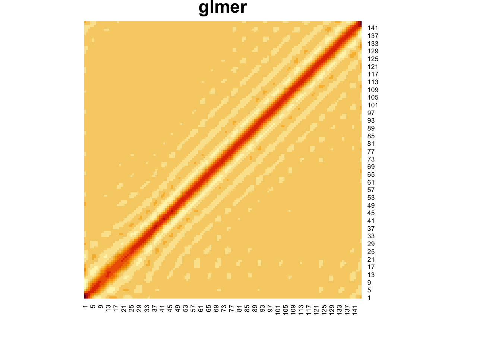
heatmap(fpca_mod2$VarMats[[which(unique(df_est_latent$id)==rand_id[1])]],
Rowv = NA, Colv = NA, main = "glmmTMB")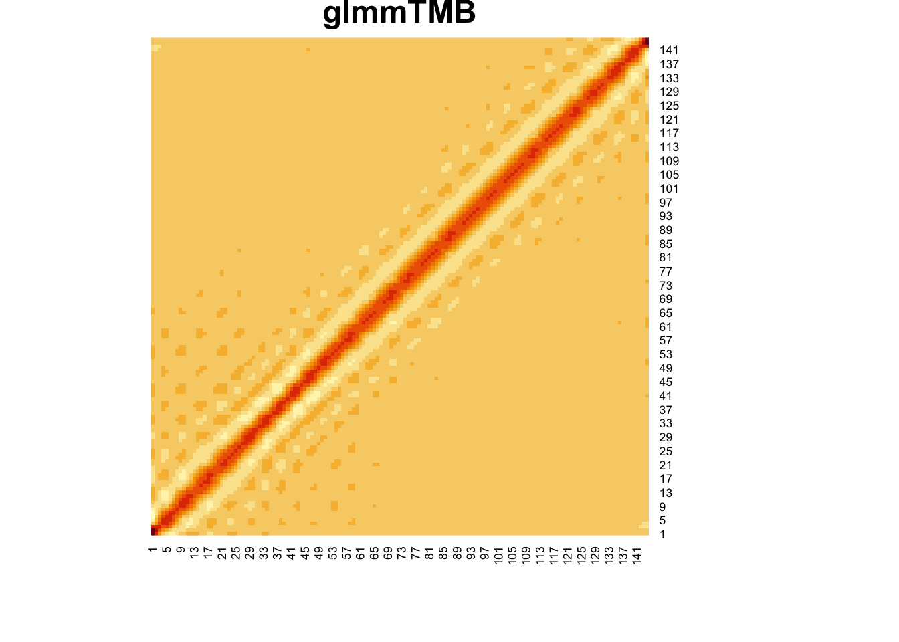
1.3 Dynamic prediction
Still from last time, we’re gonna focus on Bayes methods now!
We are also going to extend the observed track, so that there are some variation in the observed data (instead of all zeros). I am going to start with 9am (540), 1pm (780), 5pm (1020)
Extending the track seems to solve the problem with failed Laplace Approximation. Not sure. Should try on the full sample.
df_pred <- df_est_latent %>% filter(id %in% rand_id)
df_pred[, 'pred_t540'] <- df_pred[, 'pred_t780'] <- df_pred[, 'pred_t1020'] <- NA
score_out_mat <- array(NA, dim = c(length(rand_id), K, 3))# unique id
# prediction for a single subject
source(here("Code/OutsampBayes.R"))##
## Attaching package: 'LaplacesDemon'## The following objects are masked from 'package:lubridate':
##
## dst, interval## The following object is masked from 'package:purrr':
##
## partial##
## Attaching package: 'mvtnorm'## The following objects are masked from 'package:LaplacesDemon':
##
## dmvt, rmvt# PRILS
for(i in rand_id){
df_i <- df %>% filter(id==i)
# prediction
## up to 360
pred_t1 <- out_pred_laplace(fpca_mod, df_i %>% filter(sind<=540), kpc=K)
eta_pred_t1 <- fpca_mod$mu+fpca_mod$efunctions[, 1:K]%*%pred_t1$score_out
df_pred[df_pred$id == i, 'pred_t540'] <- eta_pred_t1
## up to 720
pred_t2 <- out_pred_laplace(fpca_mod, df_i %>% filter(sind<=780), kpc=K)
eta_pred_t2 <- fpca_mod$mu+fpca_mod$efunctions[, 1:K]%*%pred_t2$score_out
df_pred[df_pred$id == i, 'pred_t780'] <- eta_pred_t2
## up to 1080
pred_t3 <- out_pred_laplace(fpca_mod, df_i %>% filter(sind<=1020), kpc = K)
eta_pred_t3 <- fpca_mod$mu+fpca_mod$efunctions[, 1:K]%*%pred_t3$score_out
df_pred[df_pred$id == i, 'pred_t1020'] <- eta_pred_t3
}
df_pred$pred_t540[df_pred$bin<=540] <- NA
df_pred$pred_t780[df_pred$bin<=780] <- NA
df_pred$pred_t1020[df_pred$bin<=1020] <- NA# glmmTMB
df_pred2 <- df_est_latent %>% filter(id %in% rand_id)
df_pred2[, 'pred_t540'] <- df_pred2[, 'pred_t780'] <- df_pred2[, 'pred_t1020'] <- NA
for(i in rand_id){
df_i <- df %>% filter(id==i)
# prediction
## up to 360
pred_t1 <- out_pred_laplace(fpca_mod2, df_i %>% filter(sind<=540), kpc=K)
eta_pred_t1 <- fpca_mod2$mu+fpca_mod2$efunctions[, 1:K]%*%pred_t1$score_out
df_pred2[df_pred$id == i, 'pred_t540'] <- eta_pred_t1
## up to 720
pred_t2 <- out_pred_laplace(fpca_mod2, df_i %>% filter(sind<=780), kpc=K)
eta_pred_t2 <- fpca_mod2$mu+fpca_mod2$efunctions[, 1:K]%*%pred_t2$score_out
df_pred2[df_pred$id == i, 'pred_t780'] <- eta_pred_t2
## up to 1080
pred_t3 <- out_pred_laplace(fpca_mod2, df_i %>% filter(sind<=1020), kpc = K)
eta_pred_t3 <- fpca_mod2$mu+fpca_mod2$efunctions[, 1:K]%*%pred_t3$score_out
df_pred2[df_pred$id == i, 'pred_t1020'] <- eta_pred_t3
}
df_pred2$pred_t540[df_pred$bin<=540] <- NA
df_pred2$pred_t780[df_pred$bin<=780] <- NA
df_pred2$pred_t1020[df_pred$bin<=1020] <- NAggarrange(
df_pred %>%
ggplot()+
geom_line(aes(x=bin, y=eta_hat, group = id))+
geom_line(aes(x=bin, y = pred_t540, col = "540", group = id))+
geom_line(aes(x=bin, y = pred_t780, col = "780", group = id))+
geom_line(aes(x=bin, y = pred_t1020, col = "1020", group = id))+
facet_wrap(~id,scales = "free")+labs(title = "glmer"),
df_pred2 %>%
ggplot()+
geom_line(aes(x=bin, y=eta_hat, group = id))+
geom_line(aes(x=bin, y = pred_t540, col = "540", group = id))+
geom_line(aes(x=bin, y = pred_t780, col = "780", group = id))+
geom_line(aes(x=bin, y = pred_t1020, col = "1020", group = id))+
facet_wrap(~id,scales = "free")+labs(title = "glmmTMB"),
nrow = 1, common.legend = T)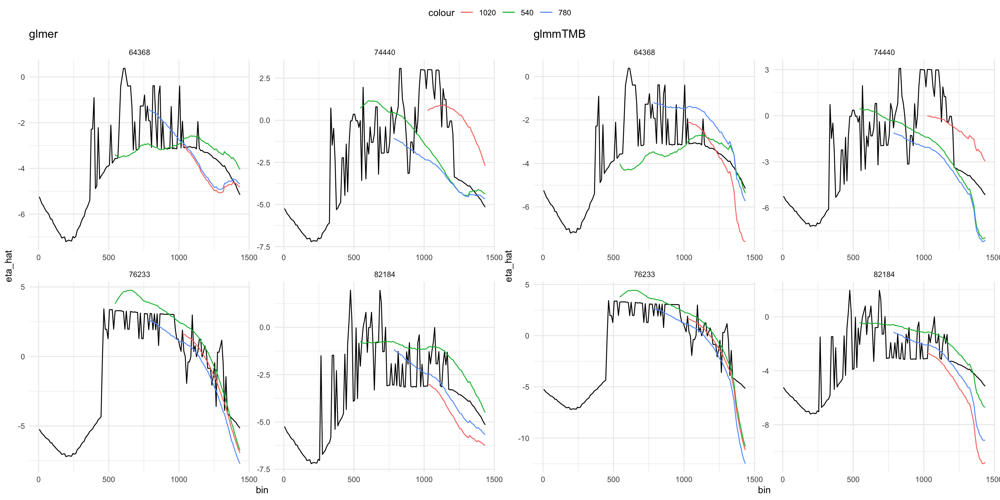
2 NHANES data application output
2.1 fGFPCA
- 80% (7017) subjects for model fitting, 20% (1753) subjects for out-of-sample prediction
- 3.3 minutes spent on model fitting, 20 minutes spent on prediction (about 0.01 per subject)
- Three subjects had failed approximation, all happened with the shortest observed track
- We can either assume that the latent function value is constant within the same bin, or use linear interpolation to fill in the gaps between bin midpoints. Here I wanna compare if this choice would make any different. Also, there are a log of other methods to fill in the gaps, such as projection.
- For linear interpolation, I set the edges to be the closest data extreme.
load(here("Data/ApplOutput_fGFPCA.RData"))# linear interpolation
# remove subjects with numeric problem
df_test_full <- df %>%
filter(id %in% unique(df_test$id)) %>%
filter(!id %in% skip_id) %>%
left_join(df_test %>% select(id, bin, pred_t540, pred_t780, pred_t1020), by = c("id", "bin"))
df_test_full$pred_t540_interp <- df_test_full$pred_t780_interp <- df_test_full$pred_t1020_interp <- NA
# interpolation for each subject
for(i in unique(df_test_full$id)){
# interpolation t540
interp_i_t540 <- approx(x = df_test[df_test$id==i, "bin"],
y = df_test[df_test$id==i, "pred_t540"],
xout = 541:J, rule = 2)
df_test_full$pred_t540_interp[df_test_full$id==i & df_test_full$sind>540] <- interp_i_t540$y
# interpolation t780
interp_i_t780 <- approx(x = df_test[df_test$id==i, "bin"],
y = df_test[df_test$id==i, "pred_t780"],
xout = 781:J, rule = 2)
df_test_full$pred_t780_interp[df_test_full$id==i & df_test_full$sind>780] <- interp_i_t780$y
# interpolation t1020
interp_i_t1020 <- approx(x = df_test[df_test$id==i, "bin"],
y = df_test[df_test$id==i, "pred_t1020"],
xout = 1021:J, rule = 2)
df_test_full$pred_t1020_interp[df_test_full$id==i & df_test_full$sind>1020] <- interp_i_t1020$y
}Let’s look at four subjects as an example:
rand_id2 <- sample(unique(df_test$id), 4)
# without interpolation, assume constant latent function value in each bin
df_test_full%>%
filter(id %in% rand_id2) %>%
mutate_at(vars(pred_t540, pred_t780, pred_t1020), function(x)exp(x)/(1+exp(x))) %>%
ggplot()+
geom_line(aes(x=bin, y = pred_t540, col = "9am"))+
geom_line(aes(x=bin, y = pred_t780, col = "1pm"))+
geom_line(aes(x=bin, y = pred_t1020, col = "5pm"))+
geom_point(aes(x=bin, y = Y, col = "Outcome"), size = 0.2)+
facet_wrap(~id)+
labs(x = "Time", y = "Estimated latent function (probablity scale)",
title = "Constant latent function within bin")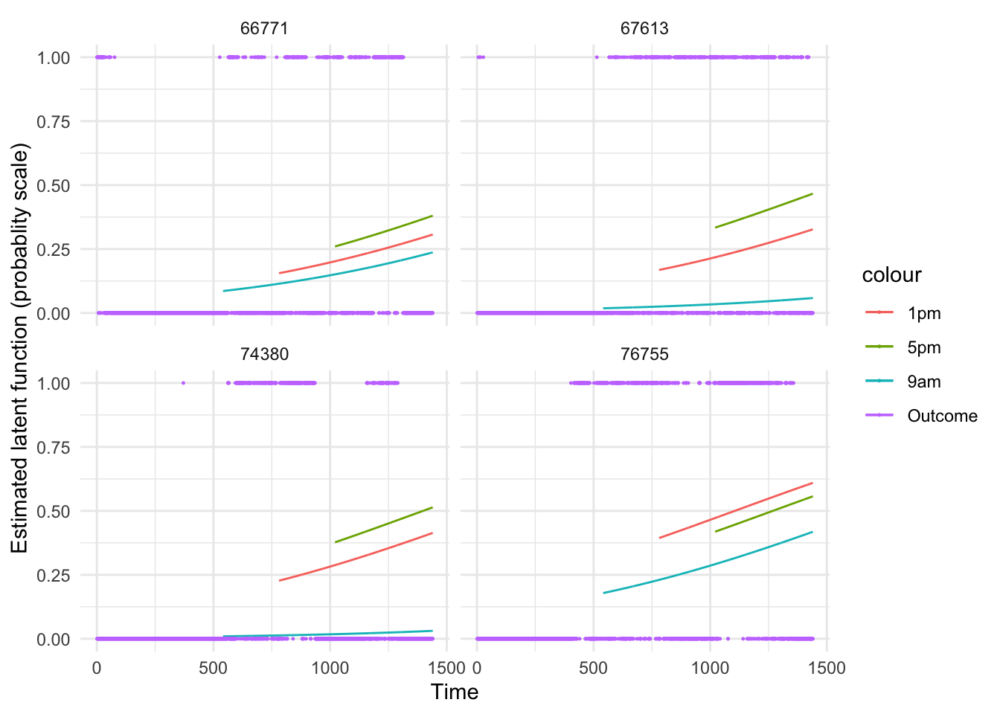
# with interpolation
df_test_full%>%
filter(id %in% rand_id2) %>%
mutate_at(vars(pred_t540_interp, pred_t780_interp, pred_t1020_interp), function(x)exp(x)/(1+exp(x))) %>%
ggplot()+
geom_line(aes(x=bin, y = pred_t540_interp, col = "9am"))+
geom_line(aes(x=bin, y = pred_t780_interp, col = "1pm"))+
geom_line(aes(x=bin, y = pred_t1020_interp, col = "5pm"))+
geom_point(aes(x=bin, y = Y, col = "Outcome"), size = 0.2)+
facet_wrap(~id)+
labs(x = "Time", y = "Estimated latent function (probablity scale)",
title = "Interpolated latent function") - Subjects with numeric issue
- Subjects with numeric issue
df %>% filter(id %in% skip_id) %>%
ggplot()+
geom_point(aes(x=sind, y=Y), size = 0.2)+
facet_wrap(~id)+
geom_vline(xintercept = c(540))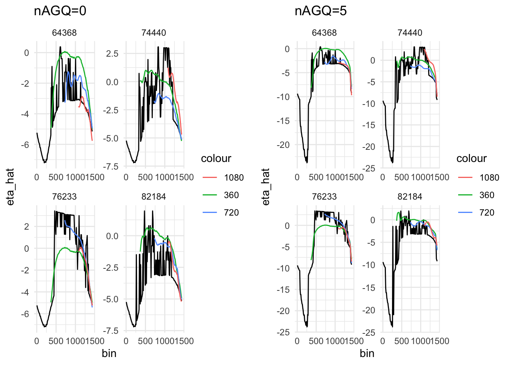
- Calculated AUC
# break by prediction window
lst_auc <- df_test_full %>%
mutate(window = cut(sind, breaks = c(0, 540, 780, 1020, 1260, 1440),
labels = c("0-9am", "9am-1pm", "1pm-5pm", "5pm-9pm","9pm-12pm"),
include.lowest = T))
lst_auc <- split(lst_auc, f=lst_auc$window)# no interpolation
# up to 9am
auc_t540 <- lst_auc[2:4] %>%
lapply(function(x)performance(prediction(x$pred_t540, x$Y), measure = "auc"))
auc_t540 <- lapply(auc_t540, function(x){x@y.values[[1]]}) %>% unlist()
# up to 1pm
auc_t780 <- lst_auc[3:4] %>%
lapply(function(x)performance(prediction(x$pred_t780, x$Y), measure = "auc"))
auc_t780 <- lapply(auc_t780, function(x){x@y.values[[1]]}) %>% unlist()
# up to 5pm
auc_t1020 <- lst_auc[4] %>%
lapply(function(x)performance(prediction(x$pred_t1020, x$Y), measure = "auc"))
auc_t1020 <- lapply(auc_t1020, function(x){x@y.values[[1]]}) %>% unlist()# with interpolation
# up to 9am
auc_t540_interp <- lst_auc[2:4] %>%
lapply(function(x)performance(prediction(x$pred_t540_interp, x$Y), measure = "auc"))
auc_t540_interp <- lapply(auc_t540_interp, function(x){x@y.values[[1]]}) %>% unlist()
# up to 1pm
auc_t780_interp <- lst_auc[3:4] %>%
lapply(function(x)performance(prediction(x$pred_t780_interp, x$Y), measure = "auc"))
auc_t780_interp <- lapply(auc_t780_interp, function(x){x@y.values[[1]]}) %>% unlist()
# up to 5pm
auc_t1020_interp <- lst_auc[4] %>%
lapply(function(x)performance(prediction(x$pred_t1020_interp, x$Y), measure = "auc"))
auc_t1020_interp <- lapply(auc_t1020_interp, function(x){x@y.values[[1]]}) %>% unlist()2.2 GLMMadaptvie
- when fitting model with random intercept + slope on the same full training set: Error: vector memory exhausted (limit reached?)
- when fitting model with only random intercept on the same full training set: Error regarding a large coefficient value. One fix is to re-scale covariates. So I re-scaled minute index by dividing them by J, so the range is within (0, 1], and tried again. This fitting procedure took 20.72 minutes to finish
- Out-of-sample prediction took 12.18 minutes. About 0.007 minute per subject.
load(here("Data/ApplOutput_GLMMadaptive.RData"))# up to 540
auc_t540_adglmm <- adglmm_pred_t540$newdata2 %>%
mutate(sind=sind*J) %>%
mutate(window = cut(sind, breaks = c(540, 780, 1020, 1260, 1440),
labels = c("9am-1pm", "1pm-5pm", "5pm-9pm","9pm-12pm"),
include.lowest = T))
auc_t540_adglmm <- split(auc_t540_adglmm, f=auc_t540_adglmm$window)
auc_t540_adglmm <- auc_t540_adglmm[1:3] %>%
lapply(function(x)performance(prediction(x$pred, x$Y), measure = "auc"))
auc_t540_adglmm <- lapply(auc_t540_adglmm, function(x){x@y.values[[1]]}) %>% unlist()
# up to 780
auc_t780_adglmm <- adglmm_pred_t780$newdata2 %>%
mutate(sind=sind*J) %>%
mutate(window = cut(sind, breaks = c(780, 1020, 1260, 1440),
labels = c("1pm-5pm", "5pm-9pm","9pm-12pm"),
include.lowest = T))
auc_t780_adglmm <- split(auc_t780_adglmm, f=auc_t780_adglmm$window)
auc_t780_adglmm <- auc_t780_adglmm[1:2] %>%
lapply(function(x)performance(prediction(x$pred, x$Y), measure = "auc"))
auc_t780_adglmm <- lapply(auc_t780_adglmm, function(x){x@y.values[[1]]}) %>% unlist()
# up to 1020
auc_t1020_adglmm <- adglmm_pred_t1020$newdata2 %>%
mutate(sind=sind*J) %>%
mutate(window = cut(sind, breaks = c(1020, 1260, 1440),
labels = c("5pm-9pm","9pm-12pm"),
include.lowest = T))
auc_t1020_adglmm <- split(auc_t1020_adglmm, f=auc_t1020_adglmm$window)
auc_t1020_adglmm <- auc_t1020_adglmm[1] %>%
lapply(function(x)performance(prediction(x$pred, x$Y), measure = "auc"))
auc_t1020_adglmm <- lapply(auc_t1020_adglmm, function(x){x@y.values[[1]]}) %>% unlist()2.3 Compare fGFPCA and GLMMadaptive
options(knitr.kable.NA = '')
tb_auc <- data.frame(auc_t540,
c(NA, auc_t780),
c(NA, NA, auc_t1020),
auc_t540_interp,
c(NA, auc_t780_interp),
c(NA, NA, auc_t1020_interp),
auc_t540_adglmm,
c(NA, auc_t780_adglmm),
c(NA, NA, auc_t1020_adglmm))
colnames(tb_auc) <- rep(c("9am", "1pm", "5pm"), 3)
tb_auc %>%
kable(digit = 4) %>%
kable_styling(full_width = F) %>%
add_header_above(c("Time spent on model fitting" = 1, "3.3" = 6, "20.72" = 3), bold = F) %>%
add_header_above(c("Time spent on prediction" = 1, "20.0" = 6, "12.2" = 3), bold = F) %>%
add_header_above(c(" "=1, "fGFPCA"=3, "fGFPCA+interpolation" = 3, "GLMMadaptive"=3))| 9am | 1pm | 5pm | 9am | 1pm | 5pm | 9am | 1pm | 5pm | |
|---|---|---|---|---|---|---|---|---|---|
| 9am-1pm | 0.7179 | 0.7178 | 0.6784 | ||||||
| 1pm-5pm | 0.6188 | 0.7463 | 0.6188 | 0.7461 | 0.6279 | 0.7258 | |||
| 5pm-9pm | 0.5915 | 0.6340 | 0.7127 | 0.5915 | 0.6339 | 0.7127 | 0.5832 | 0.6377 | 0.6799 |
- fGFPCA almost always have higher AUC. It at least is as good as GLMMadaptive.
- Computationally, fGFPCA is about 10 minute faster (33%).
2.4 Discussion
- What would be the reference method to compare our performance to? Original GLMMadaptvie perhaps is feasible on teh entire dataset. But what should we use if we wanna do sub-sample comparison? Should we even do that for this data application (or simulation alone)?
- There are still three folks with numeric problem! Shall we extend the observation track even more? I suspect that may cause still the same issue just on different subjects.
- Is interplation really necessary? It does not improve performance very much but consumes time. Also, should I try more sophisticated methods for grid extension?